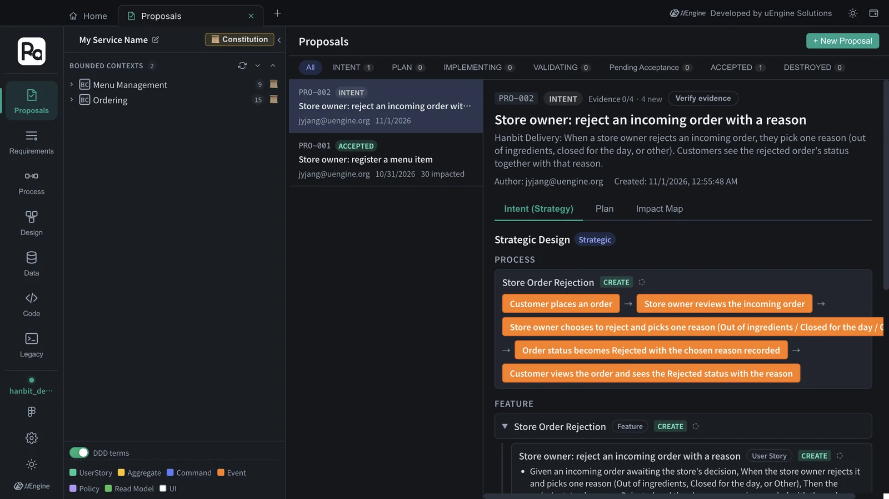
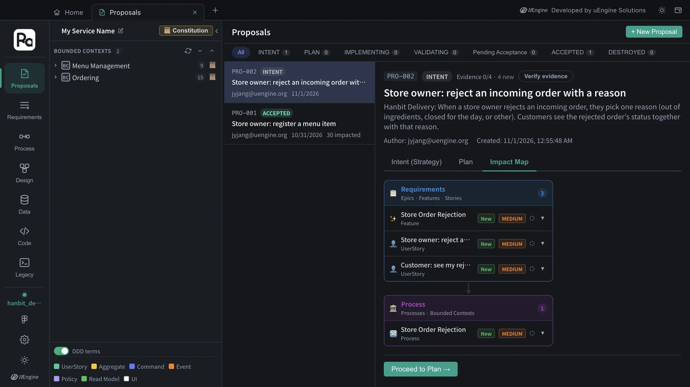
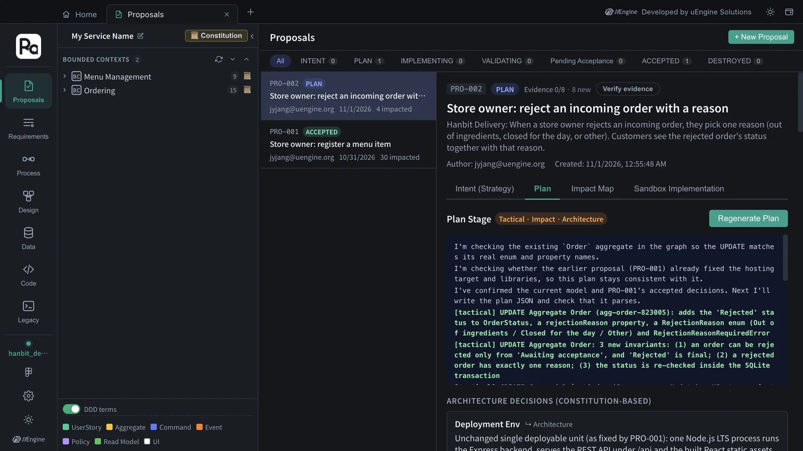
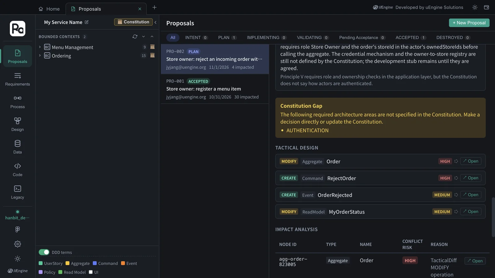
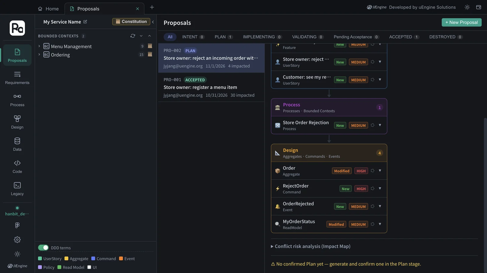

Add a new requirement on top of an accepted design, and the proposal shows separately what it creates (CREATE) and what it modifies (MODIFY). Feeding “order rejection reasons” in as PRO-002, the strategic design added a feature to the existing “Ordering” context, and the plan produced a MODIFY of PRO-001's Order aggregate with HIGH conflict risk.
Why change impact#
The first proposal (Chapters 3–7) built everything new in an empty graph. Most real work is changing what already exists. Then you want to know two things.
- What changes — what is newly created (CREATE) and what existing elements are modified (MODIFY)
- Where the risk is — places that touch elements that are already implemented and accepted (conflict risk)
The INTENT skill follows the rule “if an existing domain element matches, reuse its id”, and the plan reads the existing aggregates in the graph to produce MODIFY items. The Impact Map gathers the result into requirements · process · design layers.
Hands-on 1 — Create the proposal#
- In the
hanbit_delivery_enproject, where you finished up to Chapter 7, click Proposals tab › + New Proposal. - Enter the following sentence and click Start AI Analysis. In this tutorial it finished in about 70 seconds, with no clarification questions.
Hanbit Delivery: When a store owner rejects an incoming order, they pick one reason (out of ingredients, closed for the day, or other). Customers see the rejected order's status together with that reason.

The strategic design came out with one feature, “Store Order Rejection”, two user stories (“Store owner: reject an incoming order with a reason” · “Customer: see my rejected order's status and reason”), and the process “Store Order Rejection”. Note that it did not create a new bounded context — the feature went under the existing Ordering context created by PRO-001.
The two stories have nine acceptance criteria between them. They cover the rules in the sentence, plus edge cases that weren't in it.
| Rule | Acceptance criteria (Given · When · Then) |
|---|---|
| Reject with a reason | An incoming order awaiting the store's decision · reject it, picking one reason · status “Rejected”, with the reason recorded |
| Exactly one reason | Rejecting an order · reasons are offered · exactly Out of ingredients, Closed for the day and Other, and only one can be selected |
| (Not in the sentence) No reason | Rejecting an order · no reason picked · not completed, and the owner is asked to pick a reason |
| (Not in the sentence) Order already closed | An order already accepted, or already cancelled or rejected · try to reject it · refused, and the order keeps its status |
| The customer sees the reason | My order was rejected · I view it · “Rejected” together with the reason the store owner picked |
| (Not in the sentence) A rejected order is final | My order was rejected · I view it · shown as a final status, no longer offered for cancellation |
Hands-on 2 — The Impact Map at the intent stage#
Open the Impact Map section. At the intent stage there are only requirements (1 feature · 2 stories) and a process (1), all “New”. That's because the design (aggregates · commands · events) hasn't been decided yet. The MEDIUM badge next to each item is its impact level, not a conflict risk.

Hands-on 3 — See MODIFY in the plan#
- Click Proceed to Plan →, then Generate Plan. The constitution (Chapter 4) is used as it is. In this tutorial it took about 7 minutes (404 seconds).
- In the progress log you can see the plan check the existing Order aggregate in the graph and reuse PRO-001's decisions — “I'm checking whether the earlier proposal (PRO-001) already fixed the hosting target and libraries, so this plan stays consistent with it.” The log calls the change to Order an UPDATE; the Tactical Design list below shows it as MODIFY.

Tactical Design came out with four items.
| Operation | Kind | Name | Impact level | What changes |
|---|---|---|---|---|
| MODIFY | Aggregate | Order | HIGH | the status Rejected added to OrderStatus, the enumeration RejectionReason (Out of ingredients · Closed for the day · Other), the property rejectionReason, the exception RejectionReasonRequiredError, 3 invariants (reject only while awaiting acceptance, exactly one reason, the status re-checked inside the transaction) |
| CREATE | Command | RejectOrder | HIGH | The store owner rejects an order with exactly one reason (4 Given · When · Then scenarios) |
| CREATE | Event | OrderRejected | MEDIUM | Emitted on rejection (orderId · storeId · status · rejectionReason · rejectedAt) |
| MODIFY | Read model | MyOrderStatus | MEDIUM | Adds rejectionReason, shown only for a rejected order, which is no longer offered for cancellation |

The architecture decisions also follow the existing decisions. Repo Mapping keeps PRO-001's layout and lists only the ordering folders (backend/src/modules/ordering, a migration for ordering_ tables only, frontend/src/features/ordering), and INTER_CONTEXT_INTEGRATION says the rejection “stays inside the Ordering module; it makes no call to Menu Management”. The Constitution Gap box flags AUTHENTICATION again, as in Chapter 5 — the plan reuses PRO-001's development stub.
Hands-on 4 — The Impact Map after the plan, and conflict risk#
- Go back to the Impact Map section. Now there is a Design layer (4) — Order (Modified, HIGH), RejectOrder (New, HIGH), OrderRejected (New, MEDIUM), MyOrderStatus (Modified, MEDIUM). HIGH and MEDIUM here are each item's impact level from the plan, not its conflict risk.
- The conflict risk of each node is in the Impact Analysis table under Tactical Design in the Plan section. Order is HIGH — TacticalDiff MODIFY operation; the other three are NONE with “No related node”. Conflict risk analysis (Impact Map) below the Impact Map section is folded, and until the plan is confirmed it comes with the notice “No confirmed Plan yet”.

HIGH doesn't mean “don't”; it means “look here”
Order is an aggregate already implemented and accepted in PRO-001, so changing it affects the existing code and tests. In validation (Chapter 7), make sure the existing acceptance criteria (cancel only before acceptance, and so on) still pass. This proposal continues exactly like Chapters 6–7: confirm the plan → implement → validate → accept.
What to check#
- PRO-002's strategic design added a feature to the existing “Ordering” context without a new context.
- The plan's Tactical Design has MODIFY Aggregate Order.
- After the plan, the Impact Map has a Design layer, and in the Plan's Impact Analysis table Order's conflict risk is HIGH.
Quiz#
- Why was there no design layer in the Impact Map at the intent stage?
- Order came out as “Modified · HIGH”. What should you be careful about?
- Does this change touch the Menu Management context too? Where do you check?
Answers
- Because aggregates · commands · events are decided in the plan (tactical design). The intent stage goes only as far as requirements and processes.
- You are changing an aggregate that is already implemented and accepted, so the existing code and tests are affected. In validation, check that the existing acceptance criteria still pass.
- No. The plan's Repo Mapping lists only the ordering folders, INTER_CONTEXT_INTEGRATION says it “makes no call to Menu Management”, and the Impact Map has no Menu Management nodes either.